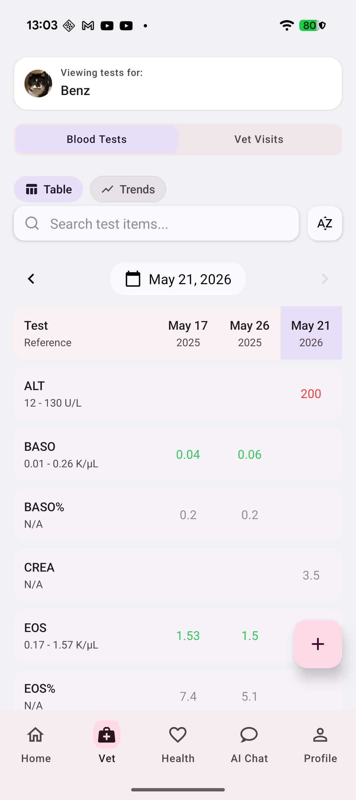
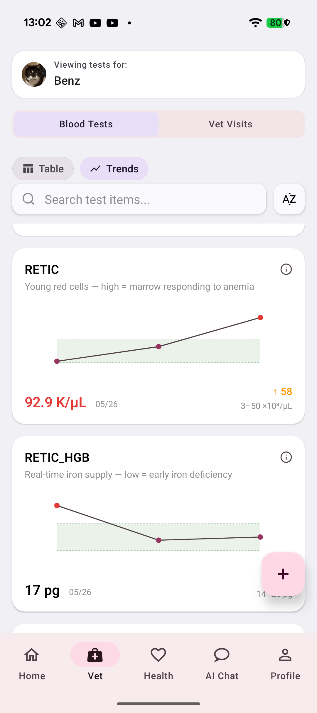
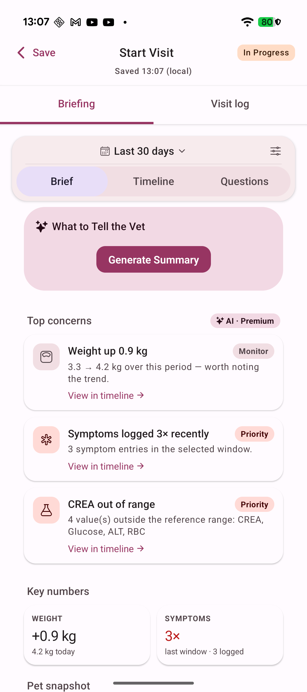
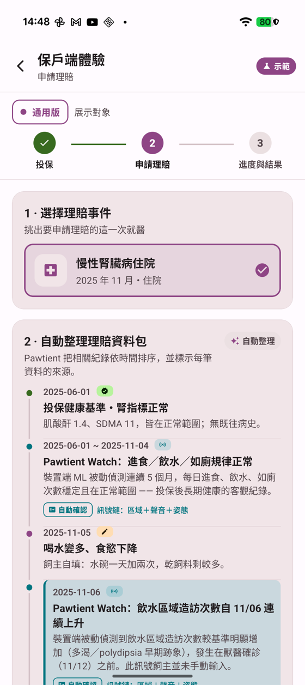
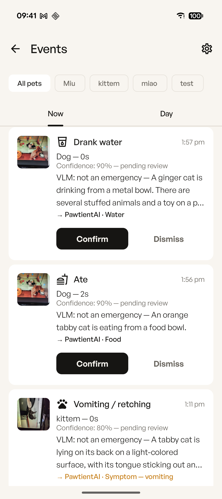
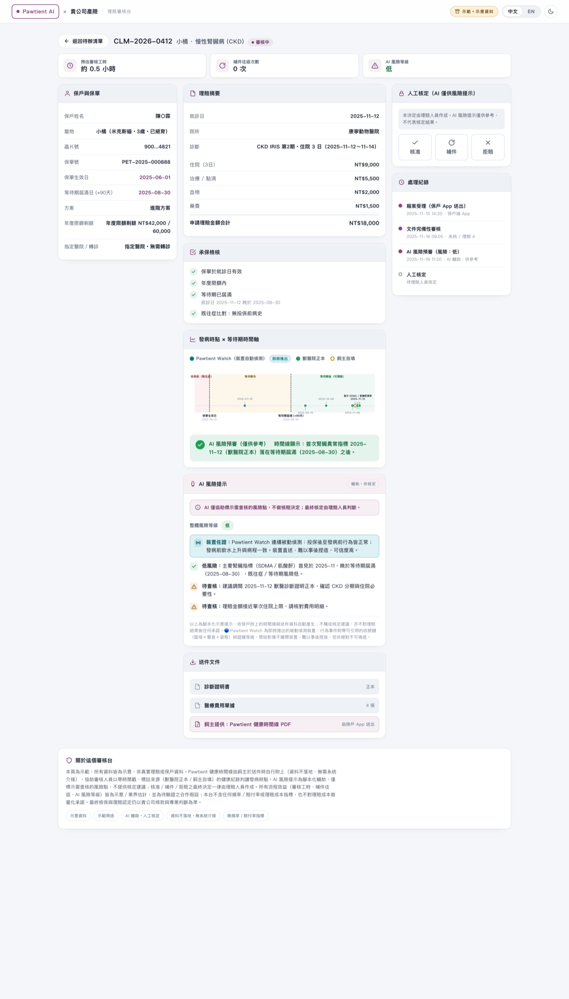

用 AI 同時把保險的
銷售做大、人工成本做省。
擴大創新服務範疇、進入新業務，發揮商業影響力——讓生意長出來。
把最耗人力的判讀、比對、流程自動化，把人留給真正需要判斷的事。
貴公司公布的徵案案例多在汽車——銷售業代評核 AI 網路輿情管理 0800 客服 AI——但底層都是這兩根槓桿。
Pawtient AI 是同一套邏輯、已經上線、而且就發生在你們已經在賣的「寵物險」裡的版本。
一隻腎貓的病程橫跨數年、數十份檢驗單，散落在不同診所的紙本與照片。我們用 AI 把它譜成一條看得懂、可追溯、帶時間戳的健康時間軸。

血檢多次並排
指標趨勢圖
看診行前簡報對保險端我們只談流程效益（審核工時、補件往返、風險分級），不涉賠付率或損失率；審核效率與爭議率為待與和泰用實際數據共同驗證的合作假設。AI 內容僅供整理參考，不構成醫療診斷。
保戶始終擁有自己的健康資料，可隨時匯出或刪除；Pawtient AI 僅為受託整理的處理者，不挪作他用。
所有蒐集與使用皆先取得保戶明確同意，並符合個人資料保護法；用途僅限健康紀錄整理與經同意的理賠佐證。
本服務定位為照護加值與理賠整理，資料不用於核保或費率調整，與保險招攬清楚切割。
傳輸與儲存皆加密、最小化存取；合作結束時資料可攜出，不會被廠商綁定。
同一個方案、兩根槓桿：對外是差異化的銷售加值，對內是理賠的人工成本下降。以下四個方向，可單獨或組合先行。
把 Pawtient AI 作為保單附加價值，提供給寵物險保戶使用。
血檢、看診、用藥與病程，自動彙整成一條可追溯的紀錄。
讓出險時的醫療資料，一開始就是結構化、有時間軸佐證的數據。
慢性病與預防照護衛教，與保戶的溝通做得更深、更黏。
選定一小群寵物險保戶，免費使用 Pawtient AI 三個月，開始累積結構化健康紀錄。
由和泰觀察理賠申請的審核效率與爭議率，是否出現可衡量的變化。
先驗證數據是否真的對和泰有幫助，再一起討論要不要、以及如何擴大。
預期效益（啟動前一起議定指標與基準線）：每件慢性病理賠的平均審核工時、平均補件往返次數、理賠爭議率；由和泰提供同期匿名基準數據共同檢視，並設最低理賠樣本門檻確保差異具參考意義。不涉系統整合、不簽長約、資料不落地——若無效，試點乾淨結束，毫無綁定。
同一份紀錄，從保戶手機一路到理賠人員的審核台——以一個慢性腎臟病示範案例完整跑通。

保戶端 · 理賠資料包
Watch · 被動行為紀錄
通用創新有限公司成立於 2025 年 6 月。創辦人在照顧自己罹患慢性腎病的愛貓時，遍尋不著真正有幫助的工具，於是親手寫下 Pawtient AI 的第一個版本；至今產品大部分仍由他親手開發。以「1 名全職創辦人 ＋ 專業委外」的精實模式，交付雙平台、9 語系的完整產品。
和泰有寵物險的銷售與理賠場景，我們有已上線、可實機展示的健康照護證據層。先小規模驗證——有效就一起擴大，無效就乾淨結束。
本提案所述保險相關效益為待驗證之合作假設；客戶情境為代表性情境，非已簽約客戶。資料不作為核保依據。Pawtient AI 為健康紀錄與整理工具，AI 內容僅供整理參考，不構成醫療診斷、不取代獸醫師。每筆資料標註來源（獸醫原始／飼主輸入／裝置偵測）。